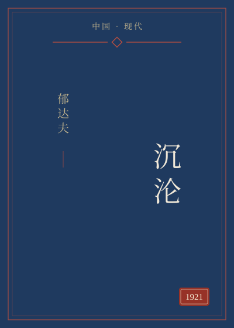
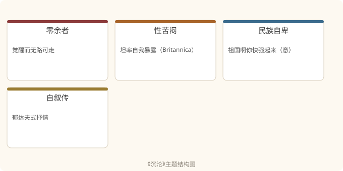

沉沦
一、基本信息
| 作者 | 郁达夫 |
|---|---|
| 成书/出版 | 1921年出版（Britannica：Chenlun (1921; Sinking)） Yu Dafu — Encyclopaedia Britannica（百科全书） |
| 国别/地区 | 中国 |
| 时代 | 现当代 · 现代 |
| 体裁 | 短篇小说集 |
| 语言 | 汉语（白话） |

《沉沦》主题结构图（主题·结构图）
二、创作背景
Britannica：该集 written in vernacular Chinese, as advocated by the new generation of writers（以新一代作家倡导的白话写作）。
新文学早期最具争议的集子：因『坦率处理性』而畅销（Britannica：Chenlun became a popular success in China because of its frank treatment of sex）。
三、内容脉络
收《沉沦》《南迁》《银灰色的死》三篇（篇目通说待核）。
《沉沦》：留日学生『他』因性苦闷与民族自卑走向自我毁灭——结尾以祖国之弱自况（通说）。
四、主要人物表
| 人物 | 身份 | 说明 |
|---|---|---|
| 他 | 留日学生 | 零余者的原型（通说） |
五、主题与艺术特点
- 零余者：觉醒而无路可走的青年（通说）。
- 性苦闷与民族屈辱的纠缠——结尾呼告祖国强盛（通说）。
- 自叙传抒情小说的开端（通说）。
六、影响与评论
- Britannica：因坦率处理性而成为中国畅销书（a popular success）。
Yu Dafu — Encyclopaedia Britannica（百科全书） - Britannica：以新一代倡导的白话写作——新文学早期代表作。
Yu Dafu — Encyclopaedia Britannica（百科全书）
七、阅读建议
难点
- 自叙传视角与『暴露』的伦理边界。
- 时代语境：五四青年的民族创伤。
- 《沉沦》（上海泰东书局1921年初版说，通说待核）。
- 《郁达夫全集》（浙江大学出版社，通说待核）。
先《沉沦》后《过去》《日记九种》；对照鲁迅《呐喊》看两种五四叙事。
八、待核实
- 初版1921年10月上海泰东书局说待核。
- 篇目三篇说待核。
- 1923年后主题转向（Britannica 已载）与本集关系待核。
本页主要来源
郁达夫的其他收录作品：沉沦